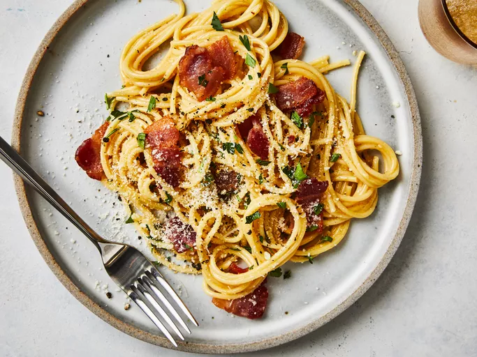

Carbonara

Description
A classic Italian pasta dish made with eggs, cheese, pancetta, and pepper.
Ingredients
- 1 pound spaghetti
- 2 tablespoons olive oil,divided, or as needed
- 8 slices bacon, diced
- 4 large eggs
- 1 onion, chopped
- 1 clove garlic, minced
- 1 cup grated Parmesan cheese
- Salt and ground black pepper to taste
- ¼ cup dry white wine
- 2 tablespoons chopped fresh parsley
- 2 tablespoons grated Parmesan cheese
- Bring a large pot of lightly salted water to a boil. Cook spaghetti in the boiling water, stirring occasionally until tender yet firm to the bite, about 8 minutes. Drain.
- Heat 1 tablespoon olive oil in a large skillet over medium heat. Add bacon and cook until crisp, about 5 minutes. Remove bacon from skillet and drain on paper towels.
- In a small bowl, whisk together eggs and 1 cup Parmesan cheese; set aside.
- Heat remaining 1 tablespoon olive oil in the same skillet over medium heat. Add onion and garlic; cook and stir until onion is translucent, about 5 minutes. Pour in white wine; cook until reduced by half, about 2 minutes.
- Reduce heat to low; return bacon to skillet. Add cooked spaghetti and toss to combine. Pour egg mixture over pasta; toss quickly to coat pasta without scrambling eggs. Season with salt and pepper to taste.
- Serve immediately, garnished with parsley and additional Parmesan cheese.
Home